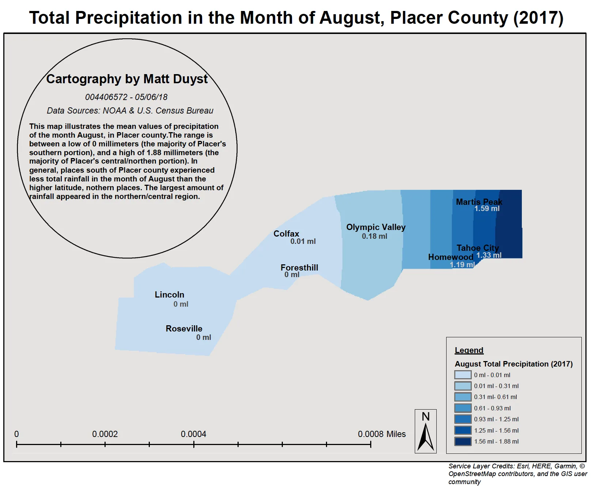
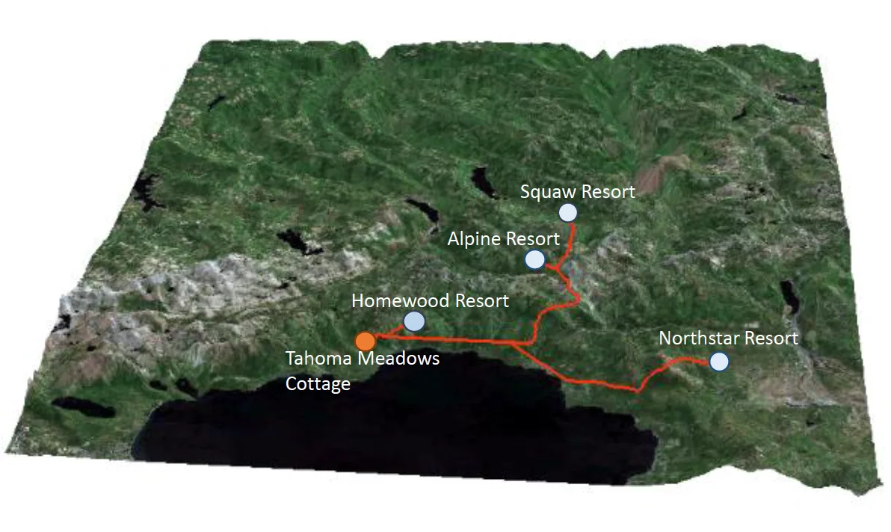

UCLA coursework, 2014 to 2020
Precipitation Calculations of Ski Resorts in Placer County, CA
Abstract:
This project capitalizes on two core concepts - Interpolation (Kriging) and the multi-layered process of building a least-cost path. The study of interest is Placer County (North Shore Lake Tahoe), known for its popularity as a snowboarding/ski resort. Precipitation patterns in the months of January and August - typically California's coldest and hottest months - are cross-referenced with the distance traveled among Tahoe's most common ski resorts: Homewood, Alpine, Squaw, and NorthStar. Tahoma Meadows, another ski resort, was chosen as the origin for the path analysis portion of the study.
Methods:
The first two maps illustrating the precipitation values in Placer County showcase the effectiveness of Kriging interpolation for the months of January and August. Data for precipitation values were garnered through NOAA, and then added as XY data points in ArcMap.
The three-dimensional rendering of the path analysis between ski resorts in Placer County, demonstrates the most affordable path from an origin location (Tahoma Meadows), to four counter destination locations (the 4 listed ski resorts).
Considerations towards the added precipitation factor (the mean of both months divided by 2), slope, and bodies of water were accounted for. A total of 4 Digital Elevation Models were downloaded for the county of Placer and combined into a single TIFF. A calculation for slope interference was then performed. Slope was reclassified between two values (old and new), with ranges between 0 - 60 and 1 - 512 accordingly. The effect of water was highlighted through a raster calculation — set with a score less than or equal to 1. Water was present in areas that assessed a score of '1' and absent in places receiving a score of '0.' Another raster classification was performed, this time incorporating the newly added presence of water and slope. The original slope was added to the total amount of water and then multiplied by 128.
The ski resort locations were downloaded through the website ‘Click2shp.’ After calculating the cost distance between the locations, the quickest path between each resort was realized. Tahoma Meadows was chosen as the origin due to its placement with Homewood - the shortest distance between any ski resort in Placer County. This process was repeated three more times (for the remaining three ski resorts). The three-dimensional representation of this final product was performed in ArcScene. Adding an elevation gradient and altering the map's Base Heights minimized the impact of Lake Tahoe and prioritized the path as the map's main focus. Accentuation of detail was produced by setting the total elevation to 5, offsetting each layer by 50°, and adding lighting for visible contrast.
Results:
Precipitation Values: Placer County, CA


3D Rendering of Path Analysis to Ski Resorts
